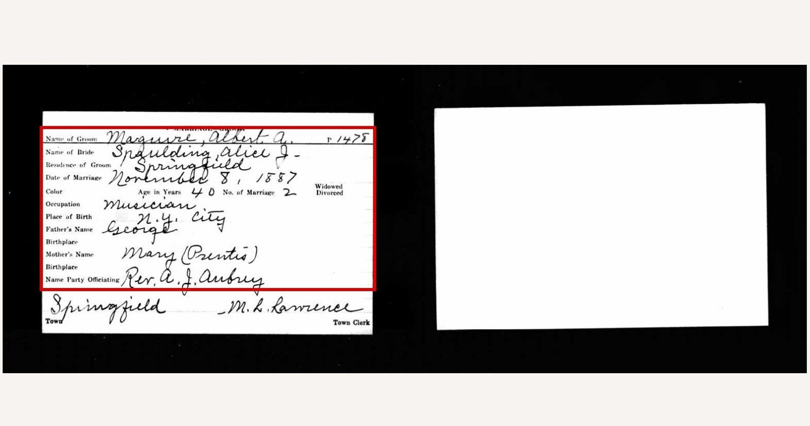
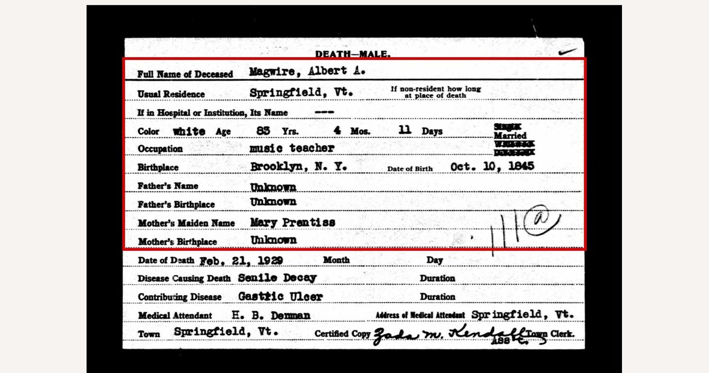
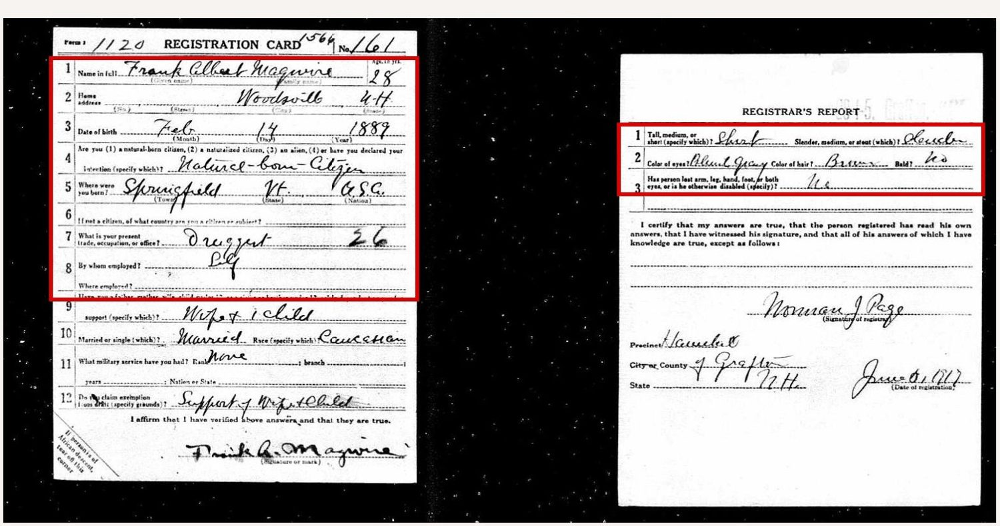
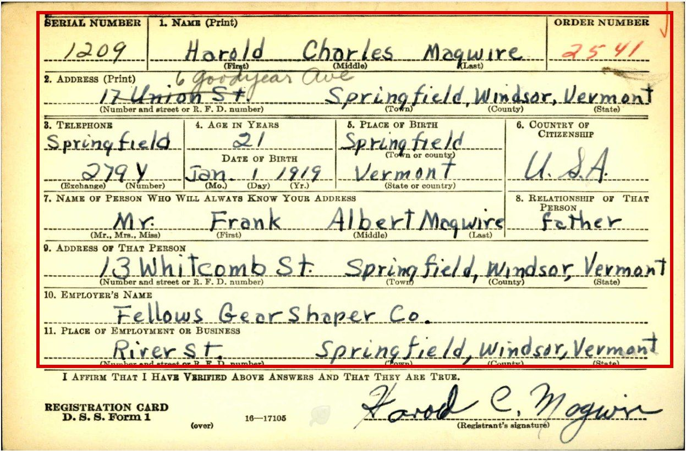
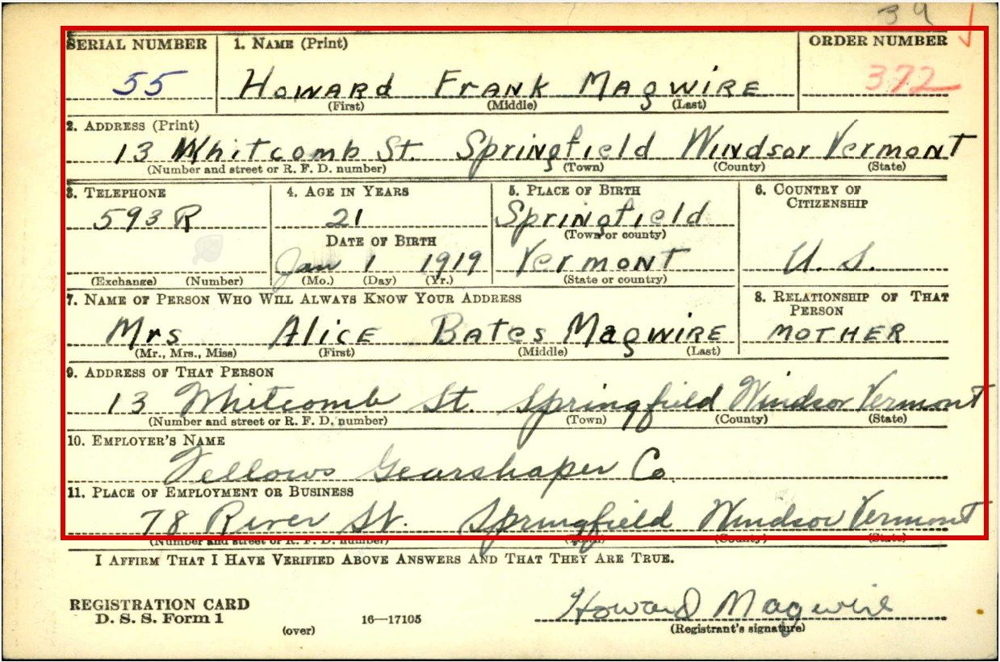
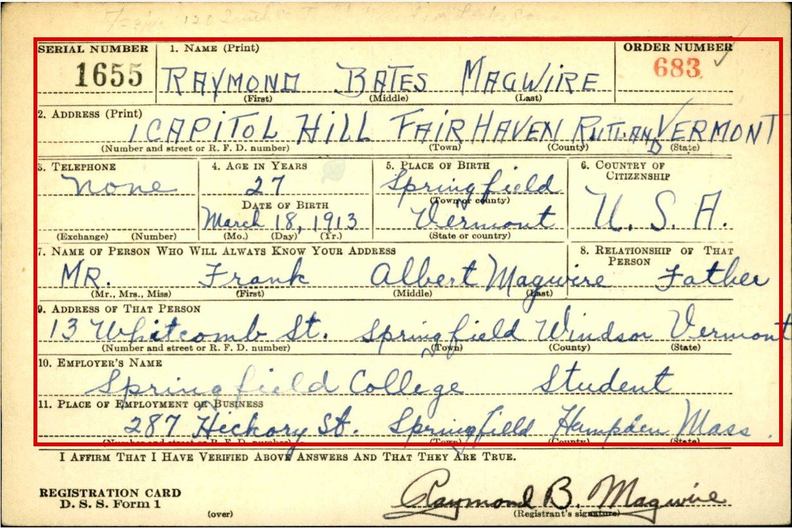

Magwire and Bates
The Magwires
Frank Albert Magwire ran Magwire's Pharmacy in Springfield, Vermont, for thirty seven years. His parents were Albert A. Magwire and Alice Jenny (Spaulding) Magwire. His son Howard is Tracy Crosby's father.
Albert and Alice Jenny
Albert A. Magwire was born in Brooklyn, New York, on October 10, 1845. He married Alice Jenny Spaulding on November 8, 1887, in a ceremony recorded at Springfield, Vermont, and died in Springfield on February 21, 1929, aged 83. His marriage card says he was 40, a musician, on his second marriage, so he had an earlier wife who is not yet identified. His death card calls him a music teacher. Albert was in the music trade. In 1904 the Edison Phonograph Monthly named him as the Edison dealer at the Springfield Music Rooms, giving outdoor evening phonograph concerts twice a week that August, and a ticketed concert in Ludlow Town Hall on October 25, 1904, with two young pianists. The November 1904 item. His marriage card names his parents as George and Mary (Prentis). His death card gives his mother's maiden name as Mary Prentiss and his father as unknown. Mary is named on two records and George on one, so the tree shows both with dashed lines. A Find a Grave note said the marriage was at Cavendish; the marriage card says Springfield, so the card is followed. See the conflicts. Further back is a lead.


Alice Jenny was born at Cavendish on August 17, 1866, the daughter of Charles Elliot Spaulding and Amantha (Putnam) Spaulding. Two family histories, the Spalding Memorial of 1872 and the Dickey Genealogy of 1898, give that birth. She died at West Lebanon, New Hampshire, on November 13, 1951, and was buried with Albert in Oakland Cemetery, Springfield.
Albert and Alice's children included Ethel, Frank Albert, Edna, Charles E. and Harrold. This site follows Frank's line. The spelling Magwire, and the form Maguire on some memorials, is the same family. See the conflicts.
Frank, the pharmacy, and a civil case
Frank Albert Magwire was born in Springfield on February 14, 1889. He married Alice Evadna Bates there on July 10, 1912. The town's printed register is the record. Frank's own draft card, filled in at Woodsville, New Hampshire, in June 1917, gives February 14, 1889 at Springfield, and shows him at 28 as a druggist supporting a wife and one child, short and slender with light gray eyes and brown hair. Frank was a registered pharmacist in Vermont, and in 1914, while he was working across the river in Charlestown, New Hampshire, that state gave him a license by reciprocity. The 1914 New Hampshire pharmacy report. Alice was born in Williamstown, Massachusetts, on September 7, 1889. Her own parents have not been identified. She died in Springfield on March 29, 1972, and is buried with Frank in Oakland Cemetery.
Frank owned Magwire's Pharmacy in Springfield for thirty seven years and retired in 1954. That length of time comes from his obituary, so it is probable, not a line in a register we have copied here.
In 1940 he kept three pinball machines in the store. The machines already carried a state license. When the village demanded its own large license fee, he paid under protest and sued. In January 1941 the Vermont Supreme Court, in Magwire v. Village of Springfield, reversed the dismissal of his suit and sent the civil case back for trial. It was a dispute over a license fee, not a criminal charge.
He belonged to St. John's Lodge No. 41 and to an Odd Fellows lodge for more than fifty years, and he was a member of Mt. Sinai Shrine in Montpelier. Frank died at Springfield Hospital on October 8, 1967.
Frank and Alice's sons were Raymond Bates (born March 18, 1913, died in Rutland on April 26, 1997, buried at Hillside Cemetery in Castleton, which a Veterans gravesite record lists under Fair Haven), who studied at Springfield College in Massachusetts and by 1952 was Vermont's state director of health and physical education (1936 yearbook, 1952 journal), and the twins Harold Charles and Howard Frank, born on January 1, 1919.



Howard, Harold and Raymond
On October 16, 1940, all three of Frank and Alice's sons registered for the draft, and the three cards confirm Frank Albert and Alice Bates Magwire as their parents. Harold Charles, 21, gave 17 Union Street, Springfield (6 Goodyear Avenue is written over it), worked at the Fellows Gear Shaper Company on River Street, and named his father Frank Albert Magwire, of 13 Whitcomb Street, as the person who would always know his address. He was 5 feet 6 inches and 130 pounds, with blue eyes and brown hair. Howard Frank, 21, lived at 13 Whitcomb Street, worked at the same company at 78 River Street, and named his mother, Mrs. Alice Bates Magwire. He was 5 feet 8 inches and 130 pounds, with blue eyes and brown hair. Raymond Bates, 27, registered from 1 Capitol Hill, Fair Haven, Vermont, as a student at Springfield College, 287 Hickory Street, Springfield, Massachusetts, and named his father. He was 5 feet 8 inches and 155 pounds, with hazel eyes and brown hair.



Harold Charles Magwire, Howard's twin, served in the U.S. Navy and married Nellie Magwire. Her details are not published. He died in Ormond Beach, Florida, on October 16, 2002, and is buried at the Vermont Veterans Memorial Cemetery in Randolph Center.
Howard Frank Magwire married Gwendolyn Farr in Springfield on January 7, 1961. That date is probable: it comes from a memorial that cites a Vermont marriage record, and the record itself is not copied here. By 1967 Howard was living in West Springfield, Massachusetts. That stay is not a separate pin. Gwendolyn's family is on the Farr page. Their daughter is Tracy Jo Crosby. Howard served in the U.S. Army from August 15, 1943 to January 7, 1946, according to a Veterans Affairs listing, which also gives his death as September 26, 2014 (the day rests on that one listing, so it is probable). He was buried in Oakland Cemetery, Springfield, beside his parents' lot. Gwendolyn had died on September 6, 2009, in Suffield, Connecticut.
Raymond Bates Magwire served as a private first class in the U.S. Army in the Second World War, and his Veterans gravesite record gives his death as April 26, 1997 and his burial at Hillside Cemetery. The record lists the cemetery under Fair Haven. The only Hillside Cemetery in Rutland County, in the USGS place-name file, is in Castleton, about four miles from Fair Haven, so the map pins Castleton and the difference is on the conflicts list. His Social Security claims index entry names his parents as Frank A. Magwire and Alice Bates.
Howard on the tree · Gwendolyn on the tree · Tracy on the tree